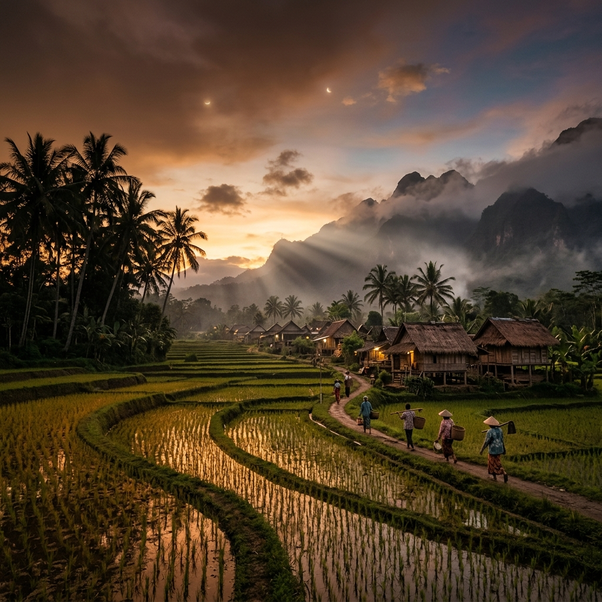
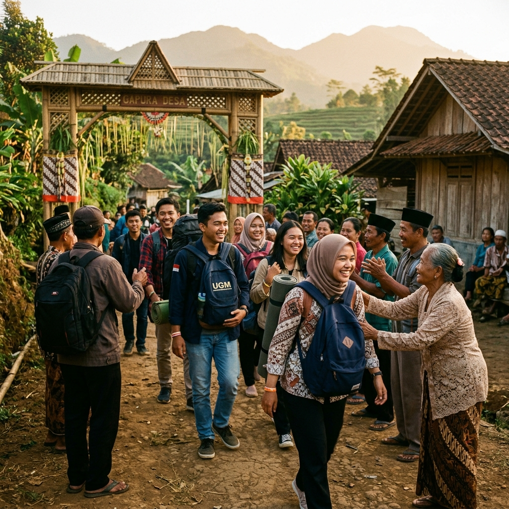
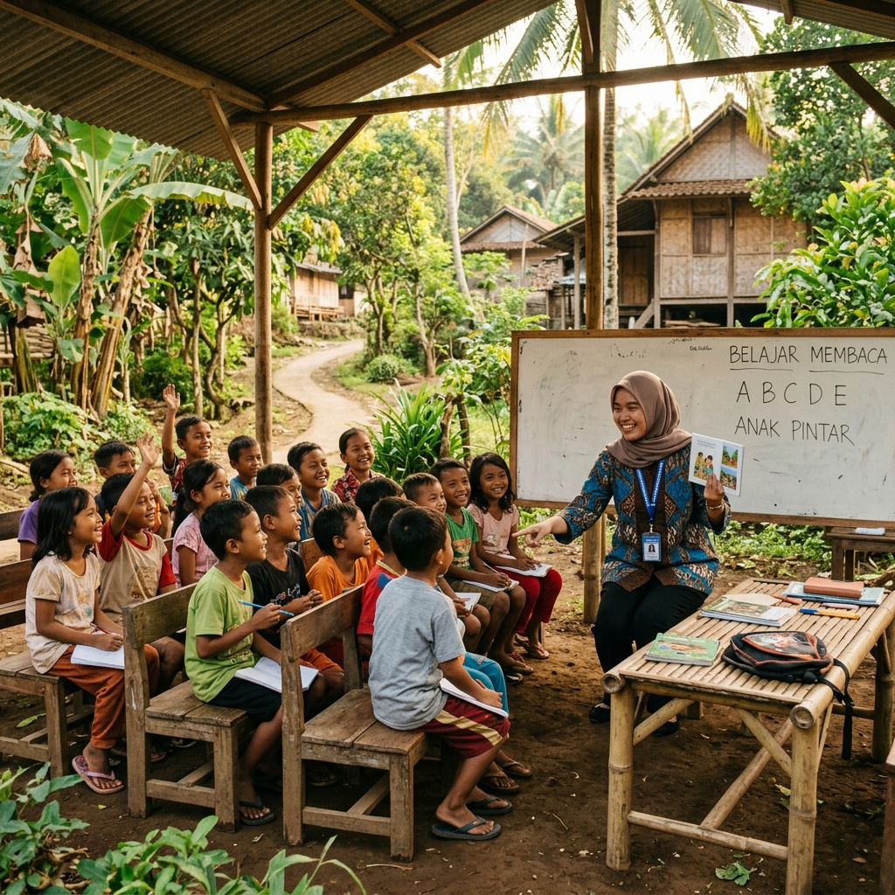
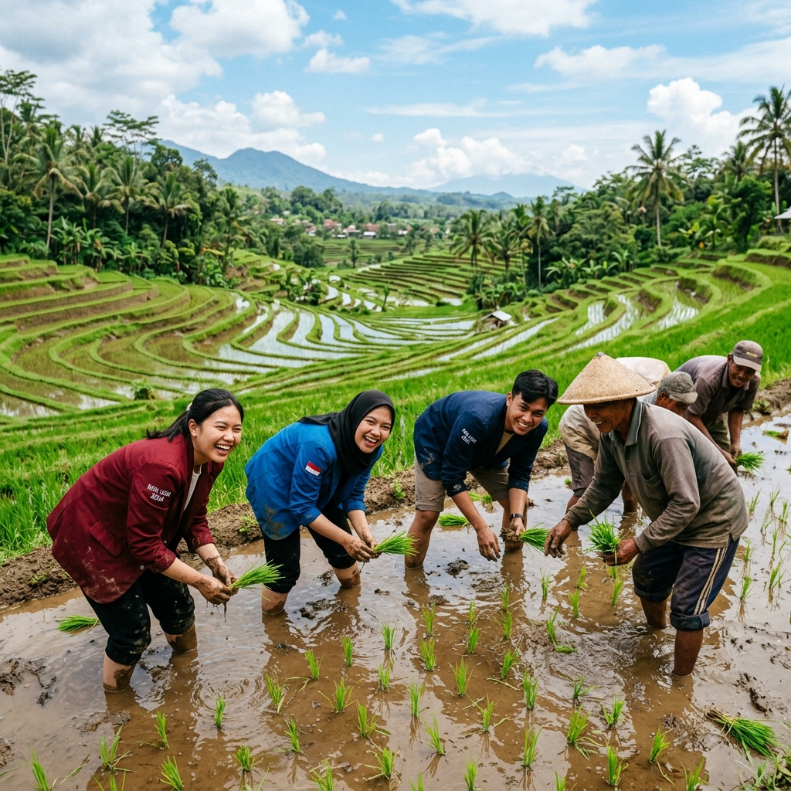
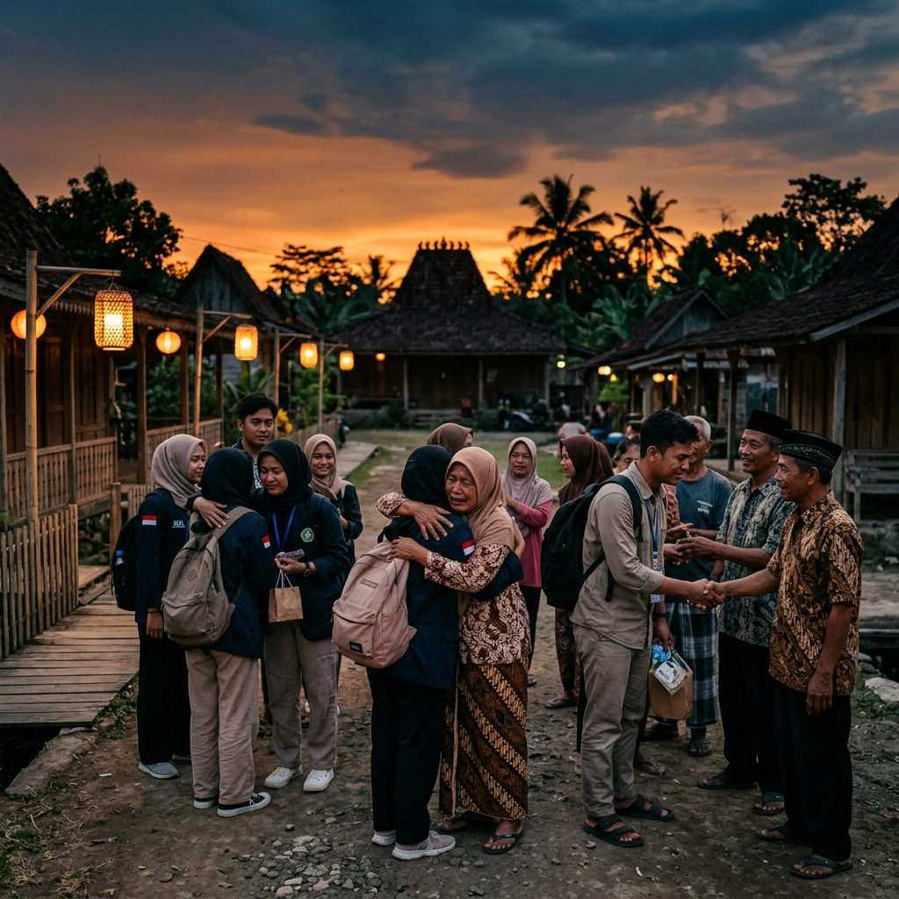

Galeri
Momen yang
Berbicara
Klik gambar untuk tampilan penuh. Setiap foto menyimpan seribu kata.

✦ Kuliah Kerja Nyata · 2025 ✦
Satu Bulan. Satu Desa. Seribu Cerita.

Tentang Kami
KKN bukan hanya kewajiban akademik — ini adalah transformasi. Selama 30 hari, kami hidup bersama masyarakat Desa Sukamaju, belajar dari kearifan lokal, dan mencoba memberikan dampak nyata melalui program yang lahir dari kebutuhan warga sendiri.
Dari mengajar anak-anak di pagi hari, hingga bekerja bersama petani di sawah saat senja — setiap momen adalah cerita yang tak akan pernah terlupa.
Kronologi
Setiap minggu punya cerita, tantangan, dan pencapaiannya sendiri. Inilah perjalanan kami — apa adanya.
Tiba dengan koper penuh harapan. Berkenalan dengan warga, memetakan kebutuhan, dan mulai jatuh cinta dengan kesederhanaan desa.

Program mulai berjalan. Kelas literasi anak-anak, pelatihan UMKM ibu-ibu, dan workshop digital farming untuk petani muda.

Terjun langsung ke sawah bersama petani. Program-program mulai menunjukkan hasil. Semangat warga menular ke kami.

Puncak acara, gelar karya, dan momen perpisahan yang menguras air mata. Desa ini kini sudah jadi rumah kedua.
Galeri
Klik gambar untuk tampilan penuh. Setiap foto menyimpan seribu kata.

Dampak Nyata
Di balik setiap kenangan, ada dampak yang terus berjalan bahkan setelah kami pergi.
Epilog
Pergi ke desa untuk mengabdi,
tapi justru kami yang paling banyak belajar.
Terima kasih telah menjadi rumah kami.
Tim KKN Kelompok 07